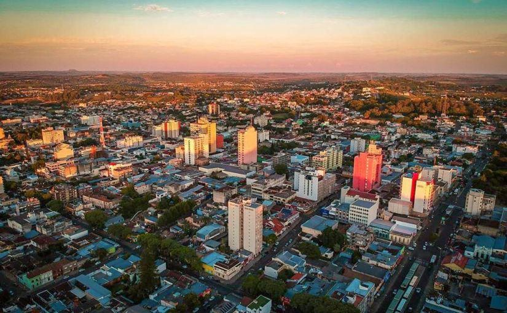
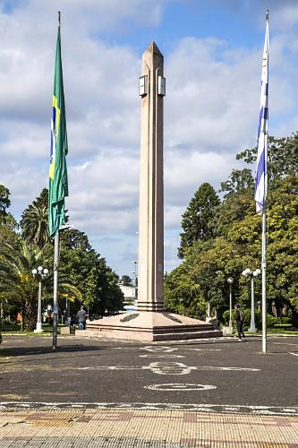

Data
Location: Rio Grande do Sul, Brazil
Country: Brazil
Region: Southern Brazil
Population: Approximately 84,000
Language: Portuguese
Currency: Brazilian Real (BRL)

Location: Rio Grande do Sul, Brazil
Country: Brazil
Region: Southern Brazil
Population: Approximately 84,000
Language: Portuguese
Currency: Brazilian Real (BRL)

Temperature: 8 °C
Conditions: Partly Cloudy
Wind: 12 km/h
Wind Chill: N/A
